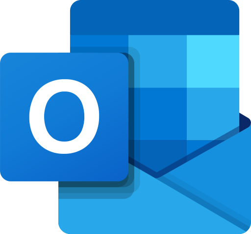

Netti palvelut
Netti palveluita on monenmoisia niinkuin: Sähköposti (Gmail, Outlook, Yahoo!),
Verkkopankki (Nordea, DanskeBank, S-Pankki),
Uutiset (Helsingin sanomat HS, Ilta-Sanomat IS, Yle uutiset), Viestintä (Facebook, Whatsapp, Skype).
Sähköposti
Sähköposti palveluja on erinlaisia kuin:
- Gmail on yksi yleisimmistä sähköposteista minkä Google omistaa.
- Outlook on Microsoftin sähköposti palvelu ennen nimeltään "Hotmail".
- Yahoo! on kuuluisa sähköposti palvelu joka on 20 vuotta vanha, simppeli ja käyttäjälle ystävällinen.
- Tutanota on yksi maailman parhaimmista turvallisista sähköposteista.
- AOL mail on internet-palveluntarjoaja joka on nykyään Verizon:in omistuksessa.
- ICloud mail on Applen tekemä sähköposti jota voit käyttää windows sekä mac-selaimessa.



Verkkopankki
Verkkopankkien käyttö
Verkkopankkia kannattaa opetella käyttämään, koska verkkopankissa maksut voi maksaa nopeasti ja halvimmalla tavalla. Pankkitunnusten käyttöä kannattaa muutenkin opetella, sillä ne avaavat pääsyn moneen paikkaan. Verkkopankkitunnuksilla voi mm. ostaa matkalippuja ja hoitaa asioita eri viranomaisten kanssa sähköisesti. Verkkopankin käyttöä voi opetella pankkien omilla verkkosivuilla. Joidenkin pankkien verkkopalveluita pääsee opettelemaan harjoittelutunnuksilla tai kokonaan ilman tunnuksia. Joidenkin pankkien verkkosivuilla on videoita, joiden avulla pääsee tutustumaan verkkoasiointiin. Pankeista voi pyytää myös henkilökohtaista opastusta verkkopankin käyttöön. Kun pyydät muilta apua verkkopankin käyttöön, muista, ettet anna omia tunnuksiasi kenellekään. Jos esimerkiksi puolisosi auttaa sinua usein verkkopankin käytössä, kannattaa harkita hänelle käyttöoikeuden antamista tiliin. Silloin hän saa virallisestikin käyttää tunnuksia.
Uutiset
Tässä on muutama uutis sivu josta voit katsoa mitä maailmalla tapahtuu